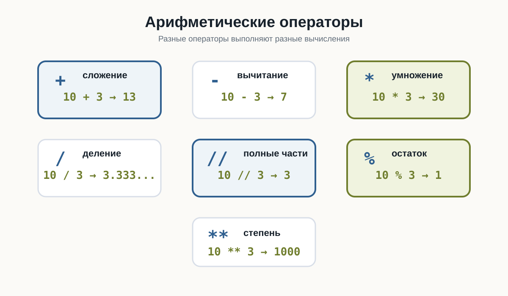
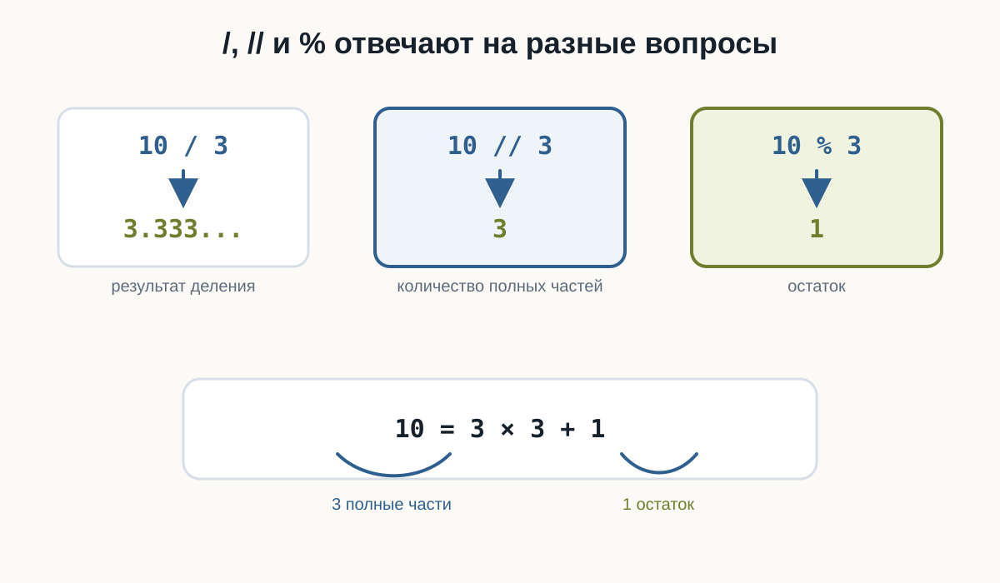
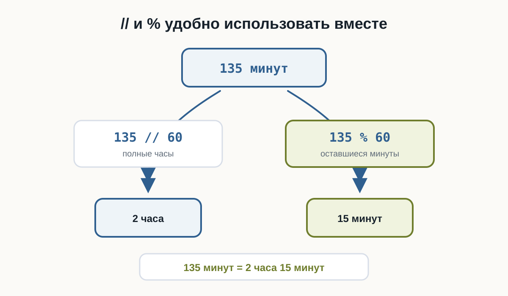
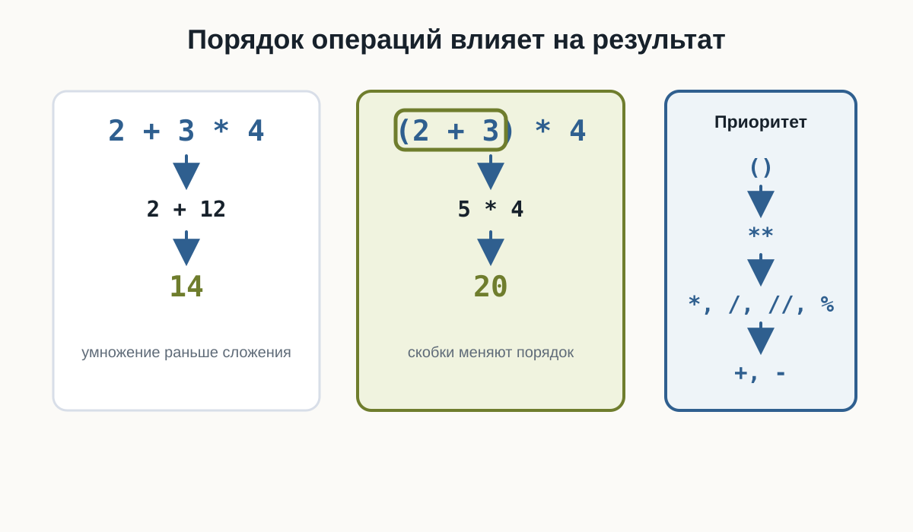
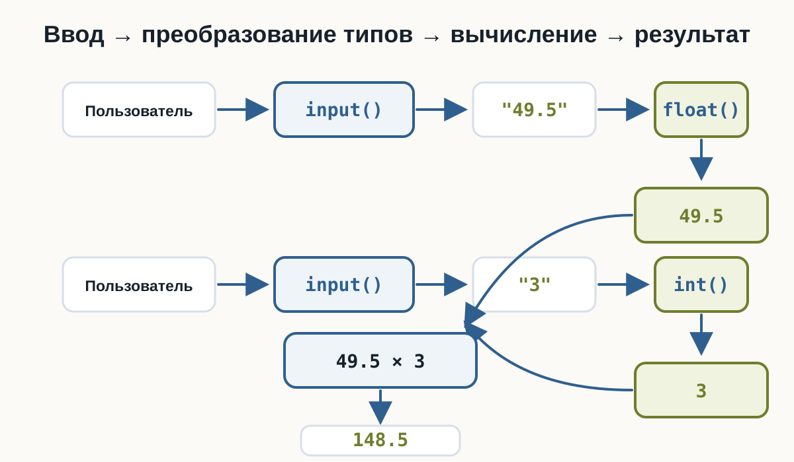

3.5 Арифметические операции
Главный вопрос главы:
Как Python выполняет вычисления с числами?
В предыдущих главах мы научились хранить числа в переменных:
price = 120
quantity = 3получать их от пользователя:
age = input("Сколько вам лет? ")и превращать строки в числа:
age = int(age)Теперь можно использовать эти значения для вычислений.
Например:
price = 120
quantity = 3
total = price * quantity
print(total)Результат:
360Здесь Python выполнил арифметическую операцию — умножение.
Но умножение — только одна из доступных операций.
Python умеет складывать, вычитать, умножать, делить, находить остаток от деления, возводить числа в степень и выполнять другие вычисления.
Основные арифметические операторы
Для вычислений Python использует специальные символы — арифметические операторы.
Основные из них:
| Оператор | Операция | Пример | Результат |
|---|---|---|---|
+ |
сложение | 10 + 3 |
13 |
- |
вычитание | 10 - 3 |
7 |
* |
умножение | 10 * 3 |
30 |
/ |
обычное деление | 10 / 3 |
3.333... |
// |
целочисленное деление | 10 // 3 |
3 |
% |
остаток от деления | 10 % 3 |
1 |
** |
возведение в степень | 10 ** 3 |
1000 |
Начнём с самых привычных операций.

Сложение
Оператор + складывает числа:
print(10 + 5)Результат:
15Можно складывать значения переменных:
apples = 5
oranges = 3
fruits = apples + oranges
print(fruits)Результат:
8Или сохранить результат вычисления в новую переменную:
salary = 80000
bonus = 15000
total = salary + bonus
print(total)Результат:
95000Общая схема:
значение + значение
↓
результатВычитание
Оператор - выполняет вычитание:
print(10 - 3)Результат:
7Например, можно вычислить оставшуюся сумму:
money = 1000
spent = 350
remaining = money - spent
print(remaining)Результат:
650Умножение
Для умножения используется оператор *:
print(6 * 4)Результат:
24Например, стоимость нескольких одинаковых товаров:
price = 150
quantity = 4
total = price * quantity
print(total)Результат:
600Теперь мы можем соединить это с пользовательским вводом:
price = float(input("Цена товара: "))
quantity = int(input("Количество: "))
total = price * quantity
print("Итого:", total)Пример работы:
Цена товара: 49.5
Количество: 3
Итого: 148.5Здесь используются сразу несколько уже знакомых элементов:
input()
↓
преобразование типов
↓
числа
↓
умножение
↓
результатОбычное деление
Для деления используется оператор /:
print(10 / 2)Результат:
5.0Обратите внимание: результат имеет дробный тип float.
Проверим:
result = 10 / 2
print(result)
print(type(result))Результат:
5.0
<class 'float'>Даже если числа делятся без остатка, оператор / возвращает float.
Например:
print(8 / 4)
print(20 / 5)Результат:
2.0
4.0Оператор / выполняет обычное деление и возвращает результат типа float.
10 / 2даёт:
5.0а не:
5Деление может давать дробный результат
Если одно число не делится на другое без остатка:
print(10 / 4)получим:
2.5Например, можно разделить общий счёт между несколькими людьми:
total = 1500
people = 4
per_person = total / people
print(per_person)Результат:
375.0Деление на ноль
Попробуем:
print(10 / 0)Такое вычисление невозможно.
Python остановит программу и сообщит об ошибке:
ZeroDivisionErrorПроверьте это в playground: ошибка сделана намеренно. Замените 0 на другое число и запустите код снова.
Это относится не только к /.
Следующие выражения также приводят к ZeroDivisionError:
10 / 0
10 // 0
10 % 0Позже мы научимся проверять данные до выполнения подобных операций.
Целочисленное деление
Кроме обычного /, в Python существует оператор:
//Он выполняет целочисленное деление.
Сравним:
print(10 / 3)
print(10 // 3)Результат:
3.3333333333333335
3При обычном делении:
10 / 3 → 3.333...При целочисленном:
10 // 3 → 3Можно представить это так:
10 = 3 × 3 + 1
└───┘
целая частьОператор // показывает, сколько полных раз делитель помещается в делимом.
Например:
print(17 // 5)Результат:
3Потому что в 17 помещаются три полные пятёрки:
5 + 5 + 5 = 15и ещё остаётся 2.
Для положительных чисел результаты иногда выглядят одинаково:
int(10 / 3) # 3
10 // 3 # 3Но это разные операции.
Особенно это заметно на отрицательных числах:
print(int(-10 / 3))
print(-10 // 3)Результат:
-3
-4int() отбрасывает дробную часть в направлении нуля.
Оператор // выполняет деление с округлением вниз.
Остаток от деления
Оператор % возвращает остаток от деления.
Например:
print(10 % 3)Результат:
1Почему?
Число 10 можно представить так:
10 = 3 × 3 + 1
↑
остатокЕщё несколько примеров:
print(15 % 4)
print(20 % 6)
print(8 % 2)Результат:
3
2
0Если число делится без остатка, % возвращает 0.
Сравните /, // и % на одних и тех же числах:

Зачем нужен остаток от деления
Оператор % часто используется, когда нужно узнать, делится ли число на другое число без остатка.
Например:
print(10 % 2)Результат:
0А:
print(11 % 2)даёт:
1Получается:
10 % 2 → 0
11 % 2 → 1Позже это позволит проверять, является ли число чётным.
Но % полезен не только для этого.
Например, переведём минуты в часы и оставшиеся минуты.
Пусть есть:
minutes = 135Полные часы:
hours = minutes // 60Оставшиеся минуты:
remaining_minutes = minutes % 60Полная программа:
minutes = 135
hours = minutes // 60
remaining_minutes = minutes % 60
print("Часы:", hours)
print("Минуты:", remaining_minutes)Результат:
Часы: 2
Минуты: 15Здесь // и % удобно работают вместе:
135 минут
↓
135 // 60 → 2 часа
135 % 60 → 15 минут
Возведение в степень
Оператор ** используется для возведения числа в степень.
Например:
print(2 ** 3)Результат:
8Потому что:
2³ = 2 × 2 × 2 = 8Ещё примеры:
print(5 ** 2)
print(10 ** 3)Результат:
25
1000Квадрат числа можно вычислить так:
number = 7
square = number ** 2
print(square)Результат:
49Несколько операций в одном выражении
Python позволяет использовать несколько арифметических операций сразу:
result = 2 + 3 * 4
print(result)Какой результат получится?
Можно предположить:
20если сначала выполнить:
2 + 3а затем умножить на 4.
Но Python выведет:
14Почему?
Потому что операции имеют приоритет.
Сначала выполняется умножение:
3 * 4 → 12затем сложение:
2 + 12 → 14Приоритет операций
В выражениях Python не всегда выполняет операции просто слева направо.
У разных операций есть разный приоритет.
Для операций этой главы удобно помнить следующий порядок:
()
↓
**
↓
*, /, //, %
↓
+, -Сначала выполняются выражения в скобках.
Затем — возведение в степень.
После этого:
*
/
//
%И только потом:
+
-Например:
print(2 + 3 * 4)Результат:
14А здесь:
print((2 + 3) * 4)результат уже другой:
20Скобки заставили Python сначала выполнить:
2 + 3Попробуйте изменить выражения и посмотреть, как меняется результат:

Скобки делают вычисления понятнее
Скобки полезны не только для изменения порядка операций.
Они помогают человеку быстрее понять выражение.
Например:
total = price * quantity + deliveryможно написать:
total = (price * quantity) + deliveryРезультат будет тем же.
Но второй вариант явно показывает:
- сначала вычисляется стоимость товаров;
- затем добавляется доставка.
Не обязательно запоминать все правила приоритета наизусть.
Если порядок вычислений может быть непонятен, используйте скобки:
average = (first + second + third) / 3Так код легче читать и проверять.
Операции одинакового приоритета
Большинство операций одного уровня выполняются слева направо.
Например:
print(20 / 5 * 2)Сначала:
20 / 5 → 4.0затем:
4.0 * 2 → 8.0Результат:
8.0Ещё пример:
print(20 - 5 + 2)Получаем:
17То есть:
20 - 5 → 15
15 + 2 → 17Особенность оператора **
Возведение в степень имеет важную особенность.
Рассмотрим:
print(2 ** 3 ** 2)Python интерпретирует это как:
2 ** (3 ** 2)Сначала:
3 ** 2 → 9затем:
2 ** 9 → 512Результат:
512Даже если вы знаете правила приоритета, явная запись часто понятнее:
2 ** (3 ** 2)или:
(2 ** 3) ** 2Эти выражения дают разные результаты, и скобки сразу показывают намерение программиста.
Вычисления с int и float
В одном выражении могут участвовать int и float.
Например:
result = 10 + 2.5
print(result)
print(type(result))Результат:
12.5
<class 'float'>Ещё пример:
price = 12.5
quantity = 4
total = price * quantity
print(total)
print(type(total))Результат:
50.0
<class 'float'>Если в вычислении участвует дробное число, результат часто также становится float.
Вычисления с пользовательским вводом
Теперь объединим несколько изученных тем.
Напишем простой калькулятор стоимости покупки:
Пример работы:
Цена товара: 250
Количество: 3
Стоимость доставки: 150
Итого: 900.0В этой небольшой программе уже есть:
input()
↓
преобразование типов
↓
переменные
↓
арифметические операции
↓
результат
Мы постепенно начинаем соединять отдельные конструкции Python в полноценные программы.
Попробуйте сами
Создайте программу:
Перед запуском попробуйте самостоятельно предсказать каждый результат.
Затем измените:
a = 17
b = 5на другие числа и посмотрите, как изменятся результаты.
Особенно сравните:
a / b
a // b
a % bЧто важно запомнить
Python поддерживает основные арифметические операции:
+ сложение
- вычитание
* умножение
/ обычное деление
// целочисленное деление
% остаток от деления
** возведение в степеньОсобенно важно различать три операции:
10 / 3 → 3.333...
10 // 3 → 3
10 % 3 → 1Они отвечают на разные вопросы:
/ → какой результат деления?
// → сколько полных частей помещается?
% → что осталось?При нескольких операциях Python учитывает их приоритет:
()
↓
**
↓
*, /, //, %
↓
+, -Скобки позволяют явно задать нужный порядок:
(2 + 3) * 4И самое важное:
Арифметическое выражение — это способ получить новое значение из уже известных числовых значений.
Практические задания
Задание 1. Четыре операции
Пользователь вводит два числа.
Выведите:
- их сумму;
- разность;
- произведение;
- результат деления.
Пример:
Первое число: 10
Второе число: 4
Сумма: 14.0
Разность: 6.0
Произведение: 40.0
Деление: 2.5a = float(input("Первое число: "))
b = float(input("Второе число: "))
print("Сумма:", a + b)
print("Разность:", a - b)
print("Произведение:", a * b)
print("Деление:", a / b)Задание 2. Площадь прямоугольника
Пользователь вводит длину и ширину прямоугольника.
Вычислите его площадь.
Пример:
Длина: 5
Ширина: 3
Площадь: 15.0length = float(input("Длина: "))
width = float(input("Ширина: "))
area = length * width
print("Площадь:", area)Задание 3. Среднее значение
Пользователь вводит три числа.
Вычислите их среднее арифметическое.
Пример:
Первое число: 10
Второе число: 20
Третье число: 30
Среднее: 20.0a = float(input("Первое число: "))
b = float(input("Второе число: "))
c = float(input("Третье число: "))
average = (a + b + c) / 3
print("Среднее:", average)Скобки здесь важны:
(a + b + c) / 3Сначала складываются три числа, затем результат делится на 3.
Задание 4. Часы и минуты
Пользователь вводит количество минут.
Переведите его в часы и оставшиеся минуты.
Пример:
Количество минут: 135
Часы: 2
Минуты: 15minutes = int(input("Количество минут: "))
hours = minutes // 60
remaining_minutes = minutes % 60
print("Часы:", hours)
print("Минуты:", remaining_minutes)// находит количество полных часов, а % — оставшиеся минуты.
Задание 5. Предскажите результат
Не запускайте код сразу.
Определите результаты:
print(2 + 3 * 4)
print((2 + 3) * 4)
print(17 // 5)
print(17 % 5)
print(2 ** 4)Результат:
14
20
3
2
16В первом выражении умножение выполняется раньше сложения:
2 + 3 * 4
↓
2 + 12
↓
14Во втором порядок изменяют скобки:
(2 + 3) * 4
↓
5 * 4
↓
20Задание 6. Найдите проблему
Что произойдёт здесь?
number = 10
result = number / 0
print(result)Почему?
Программа завершится с ошибкой:
ZeroDivisionErrorНа ноль делить нельзя.
Ошибка возникает при выполнении:
10 / 0Задание 7. Задача со звёздочкой
Пользователь вводит количество секунд.
Переведите его в:
- полные минуты;
- оставшиеся секунды.
Например:
Количество секунд: 145
Минуты: 2
Секунды: 25Попробуйте решить задачу с помощью // и %.
seconds = int(input("Количество секунд: "))
minutes = seconds // 60
remaining_seconds = seconds % 60
print("Минуты:", minutes)
print("Секунды:", remaining_seconds)Для 145:
145 // 60 → 2
145 % 60 → 25Поэтому:
145 секунд = 2 минуты 25 секундЧто дальше?
Теперь программа умеет:
- хранить данные в переменных;
- различать типы данных;
- получать данные через
input(); - преобразовывать строки в числа;
- выполнять вычисления.
Например:
price = float(input("Цена: "))
quantity = int(input("Количество: "))
total = price * quantity
print("Итого:", total)Но пока программа выполняет одни и те же действия независимо от результата вычислений.
Что если нужно сделать так:
если пользователь совершеннолетний → показать одно сообщение
иначе → другоеИли:
если пароль правильный → продолжить
иначе → сообщить об ошибкеДля этого программе нужно научиться сравнивать значения и принимать решения.
Следующий главный вопрос:
Как Python сравнивает значения?
Этому посвящена следующая глава:
«Сравнение значений».